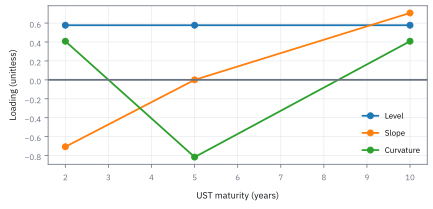
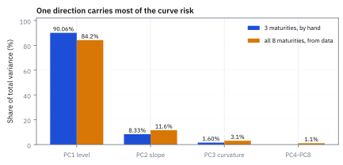
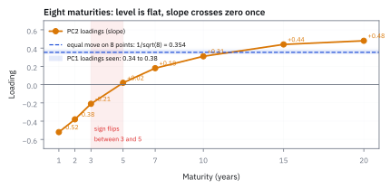
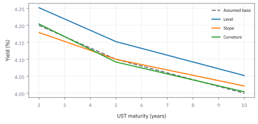
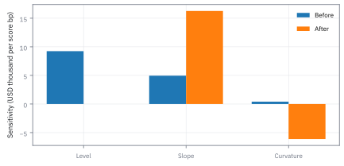
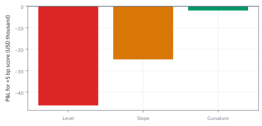

17.4 Principal Component Analysis (PCA)
พันธบัตรแปดอายุขยับไปด้วยกันแน่นจนความเสี่ยงแปดมิติเหลือสามทิศที่ตั้งฉากกัน eigenvector คือพอร์ตของแต่ละทิศ และ eigenvalue คือความผันผวนของพอร์ตนั้น
อัตราผลตอบแทนพันธบัตรรัฐบาลแปดอายุขยับไปด้วยกันแน่นมาก อายุติดกันมี correlation ราว 0.90 ปลายกับปลาย 0.75 ความเสี่ยงแปดมิตินี้มีกี่มิติจริง? และถ้าถือพันธบัตร 10 ปี \$100 ล้าน อยากให้พอร์ตไม่สนใจว่าดอกเบี้ยทั้งเส้นขึ้นหรือลง คนหนึ่งบอกให้ short พันธบัตร 2 ปี \$100 ล้านเท่ากัน ถูกไหม?
ลองตอบก่อนเปิดเฉลย
ทิศเดียวคือทั้งเส้นขยับพร้อมกัน อธิบายได้ 84% (แปดอายุจากข้อมูล) ถึง 90% (สามอายุที่คิดด้วยมือ) สามทิศรวม 98.9% ส่วน \$100 ล้านผิดไปมาก พันธบัตร 2 ปีไวต่อดอกเบี้ยน้อยกว่า 4.36 เท่า ต้อง short ราว \$448.4 ล้าน ถ้าอัตราสองอายุแกว่งวันละกี่ basis point เท่ากัน และ \$523.1 ล้าน ถ้าอายุ 10 ปีแกว่ง 7 ต่อ 6 ของอายุ 2 ปี
สิ่งที่เราจะสร้าง
7.6 นิยาม eigenvalue และ eigenvector ของ matrix สมมาตร 8.2 แสดงว่า variance ของพอร์ตคือ $w^{\mathsf T}\Sigma w$ หน้านี้เอาสองเรื่องมาชนกัน: ถ้าพอร์ต $w$ ยาวหนึ่งหน่วย ทิศไหนแกว่งมากที่สุด คำตอบคือ eigenvector และตอนท้าย 17.3 ทิศที่แกว่งน้อยคือทิศที่ $\Sigma^{-1}$ ขยายความคลาดเคลื่อน
เริ่มจาก correlation ของสามอายุ (2, 7 และ 20 ปี) หา eigenvalue และ eigenvector ด้วยมือ อ่านรูปทรง ดูว่าทำไมต้องเป็น eigenvector แปลงเป็นสัดส่วน เทียบกับแปดอายุจากข้อมูลของคอร์ส ใช้ทิศแรกสร้าง hedge ด้วย DV01 ของ 18.2 แล้วใช้ตัวอย่างที่รู้คำตอบแสดงว่าหลัง hedge ความเสี่ยงไปกองในทิศที่ดูเล็ก
ศัพท์ที่ใช้ในหัวข้อนี้
- Principal Component Analysis (PCA)
- การหมุนแกนของข้อมูลหลายตัวแปรไปยังทิศที่แกว่งมากที่สุด ถัดมา และถัดมา โดยแต่ละทิศตั้งฉากกัน ใช้ลดมิติและแยกความเสี่ยงหลักที่ไม่ปนกัน
- Yield curve
- อัตราผลตอบแทนของพันธบัตรหลายอายุ ณ เวลาเดียวกัน วาดเป็นเส้นเทียบอายุ ใช้ดูต้นทุนเงินของแต่ละระยะ
- Basis point (bp)
- หนึ่งในร้อยของหนึ่งเปอร์เซ็นต์ หน่วยมาตรฐานของการขยับดอกเบี้ย เช่น 4.20% เป็น 4.25% คือขึ้น 5 bp
- Eigenvector ในฐานะพอร์ต
- vector ยาวหนึ่งหน่วยที่ matrix คูณแล้วได้ทิศเดิม ในหน้านี้แต่ละช่องบอกว่าแต่ละอายุขยับเท่าไรเมื่อทิศนั้นขยับหนึ่งหน่วย
- Eigenvalue ในฐานะ variance
- ตัวคูณที่ matrix ยืด eigenvector และเท่ากับ variance ของการขยับในทิศนั้น ใช้เรียงว่าทิศไหนสำคัญ
- Loading
- ตัวเลขแต่ละช่องของ eigenvector อยู่ในหน่วยการขยับของอัตรา (หรือของอัตราที่หารด้วยความผันผวนแล้ว เมื่อใช้ correlation) ไม่ใช่หน่วยเงิน
- DV01
- เงินที่มูลค่าพันธบัตรเปลี่ยนเมื่ออัตราขยับ 1 bp (18.2) ใช้แปลงการขยับของอัตราเป็นกำไรขาดทุน
สัญลักษณ์และหน่วย
| สัญลักษณ์ | ความหมาย | หน่วย |
|---|---|---|
| $\Delta y$ | vector การขยับรายวันของอัตราทุกอายุ | bp |
| $R$ | correlation matrix ของ $\Delta y$ | ไม่มีหน่วย |
| $q_k$ | eigenvector ที่ $k$ ยาวหนึ่งหน่วย | ไม่มีหน่วย |
| $\lambda_k$ | eigenvalue ที่ $k$ คือ variance ในทิศนั้น | ตาม matrix |
| $Q,\ \Lambda$ | matrix ที่มี $q_k$ เป็นคอลัมน์ และ matrix แนวทแยงของ $\lambda_k$ | ตาม matrix |
| $z_k$ | คะแนนของวันหนึ่งในทิศที่ $k$ คือ $q_k^{\mathsf T}\Delta y$ | ตาม $\Delta y$ |
| $n$ | จำนวนอายุ | ตัว |
| $\sigma_i$ | ความผันผวนรายวันของอัตราอายุ $i$ | bp ต่อวัน |
| $\Sigma$ | covariance matrix ของ $\Delta y$ ในตัวอย่างที่สอง | bp กำลังสอง |
| $d$ | vector DV01 ของพอร์ต | \$ ต่อ bp |
ขั้นที่ 1 — ลองด้วยมือ: เดาทิศที่ปลายสองข้างสวนกัน
เพื่อคิดด้วยมือ เลือกตัวแทนสามอายุ 2, 7 และ 20 ปี ของการขยับรายวัน (ไม่ใช่ระดับ เพราะระดับดอกเบี้ยเดินไปเรื่อย ๆ ไม่วนรอบค่าเดิม) อายุติดกันมี correlation 0.90 ปลายกับปลาย 0.75 สังเกตว่าอ่าน matrix จากมุมล่างขวาย้อนขึ้นไปได้ matrix เดิม ทิศพิเศษจึงต้องพลิกแล้วได้ตัวเองหรือได้ลบของตัวเอง ลองแบบหลังก่อน
คูณ $R$ กับ $v$ แล้วได้ $v$ เดิมคูณ 0.25 นี่คือนิยามของ eigenvector ตรงตัว ไม่ได้เดาสุ่ม เครื่องหมายบวก ศูนย์ ลบ คือพอร์ตที่ได้เมื่อดอกเบี้ยสั้นขึ้นขณะที่ยาวลง นั่นคือความชัน (slope) ของเส้น
$\lambda_2$ เท่ากับ 1 ลบ correlation ของปลายสองข้างพอดี ยิ่งปลายเกาะกันแน่น ความเสี่ยงเรื่องความชันยิ่งเล็ก หาร $v$ ด้วยความยาว $\sqrt2$ เพื่อให้ยาวหนึ่งหน่วย
ขั้นที่ 2 — อีกสองตัวจากสมการกำลังสอง
ทิศอีกแบบคือปลายเท่ากัน $(x,y,x)$ ใส่เข้าไปแล้วแถวแรกกับแถวสามให้สมการเดียวกัน ปัญหาสามตัวแปรจึงยุบเหลือสอง
สองสมการกลางเป็นระบบ 2×2 ที่มีคำตอบไม่ใช่ศูนย์ได้เมื่อ determinant ของมันเป็นศูนย์ จึงได้สมการกำลังสอง $7.0425=2.75^2-4(0.13)$ ระบบนี้ไม่สมมาตร (0.90 กับ 1.80) เพราะพับปลายสองข้างเข้าหากัน ตัวกลางเห็นปลายทั้งสองข้าง ส่วนปลายแต่ละข้างเห็นตัวกลางครั้งเดียว
บรรทัดสุดท้ายคือตัวตรวจ ผลบวกของ eigenvalue เท่ากับผลบวกแนวทแยงของ matrix เสมอ (7.6) และแนวทแยงของ correlation เป็น 1 ทุกช่อง จึงได้ 3 พอดี รากของ 7.0425 คิดมือได้: $2.65^2=7.0225$ ขาด 0.02 หารด้วย $2(2.65)$ ได้เพิ่ม 0.00377
ขั้นที่ 3 — loading แล้วอ่านเครื่องหมาย
มี $\lambda$ แล้ว หา $y$ จากแถวแรกของระบบ 2×2 คือ $y=(\lambda-1.75)x/0.90$ ตั้ง $x=1$ แล้วหารด้วยความยาวให้ยาวหนึ่งหน่วย
$q_1$ เป็นบวกทุกช่องขนาดใกล้กัน คือทั้งเส้นขึ้นลงพร้อมกัน เรียก level $q_3$ ปลายบวกกลางลบ คือท้องเส้นนูนหรือยุบ เรียก curvature ผลคูณ $q_1^{\mathsf T}q_3$ เป็นศูนย์ (ตัวเลขที่ปัดสี่ตำแหน่งให้ 0.47966 ลบ 0.47960) เพราะ eigenvector ของ matrix สมมาตรที่ eigenvalue ต่างกันตั้งฉากกันเสมอ
วิธีอ่านเร็ว: เดินจากอายุสั้นไปยาวแล้วนับว่าเครื่องหมายสลับกี่ครั้ง ไม่สลับคือ level สลับครั้งเดียวคือ slope สลับสองครั้งคือ curvature ถ้าโปรแกรมให้เครื่องหมายกลับทั้งชุด ก็เป็นทิศเดียวกันมองกลับด้าน เพราะลบของ eigenvector ก็เป็น eigenvector
Figure 17.4a — สามรูปทรงจาก correlation 0.90 และ 0.75

แกนนอนคืออายุ 2, 7 และ 20 ปี แกนตั้งคือ loading ของ vector ยาวหนึ่งหน่วย เส้นน้ำเงินคือ level (+0.566, +0.599, +0.566) เส้นส้มคือ slope (+0.707, 0, −0.707) เส้นเขียวคือ curvature (+0.423, −0.801, +0.423) ตามขั้นที่ 1 ถึง 3
ขั้นที่ 4 — ทำไมทิศที่แกว่งมากที่สุดต้องเป็น eigenvector
ถามให้ตรง: ถ้าถือพอร์ต $q$ ที่ยาวหนึ่งหน่วย variance ของมันคือ $q^{\mathsf T}Rq$ (8.2) ทิศไหนทำให้ค่านี้มากที่สุด ต้องบังคับความยาว ไม่อย่างนั้นยืด $q$ ออกก็ได้ค่ามากขึ้นไม่สิ้นสุด จึงใช้ Lagrangian ของ 12.4
ความชันศูนย์ของ Lagrangian คือนิยามของ eigenvector ตรงตัว และ variance ในทิศนั้นเท่ากับ $\lambda$ ของมันพอดี ทิศที่แกว่งมากที่สุดจึงเป็น eigenvector ที่ $\lambda$ ใหญ่ที่สุด ทิศถัดไปคือทิศที่แกว่งมากที่สุดในบรรดาทิศที่ตั้งฉากกับทิศแรก
$z$ คือคะแนนของแต่ละวันบนแกนใหม่ matrix ของมันเป็นแนวทแยง คะแนนบนแกนต่างกันจึงมี covariance เป็นศูนย์ แต่ไม่ได้แปลว่าเป็นอิสระกัน (8.3)
ขั้นที่ 5 — แปลง eigenvalue เป็นสัดส่วน และดูว่า inverse ขยายทิศไหน
สัดส่วนที่ทิศหนึ่งอธิบายคือ eigenvalue ของมันหารด้วยผลบวกทั้งหมด ซึ่งเมื่อใช้ correlation คือจำนวนอายุ แล้วดูอีกด้านที่ 17.3 ทิ้งไว้: $R^{-1}=Q\Lambda^{-1}Q^{\mathsf T}$ มี eigenvector ชุดเดิมแต่ eigenvalue กลับหัว
ความเสี่ยงสามมิติจึงเป็นมิติเดียวเป็นหลัก รู้ว่าวันนี้ระดับดอกเบี้ยขยับเท่าไรก็อธิบายการขยับได้ 90% ถ้า correlation ทุกคู่เป็น 1 ทิศแรกจะได้ 100% และอีกสองทิศเป็นศูนย์
ส่วน inverse ขยายทิศ curvature 56 เท่าของทิศ level optimizer ที่ใช้ $\Sigma^{-1}$ แบบ 17.3 จึงไวที่สุดต่อความคลาดเคลื่อนในทิศที่ข้อมูลบอกเราน้อยที่สุด ตัวเลข 56.2 คือ condition number ซึ่ง 17.8 จะลดลงด้วย shrinkage
ขั้นที่ 6 — ผลจริงของทั้งแปดอายุ
เอกสารของคอร์สทำ PCA บน correlation ของการขยับรายวันของอัตราพันธบัตรรัฐบาลแปดอายุ 1, 2, 3, 5, 7, 10, 15 และ 20 ปี ตัวเลขข้างล่างเป็นผลที่เอกสารให้มา ผลบวก eigenvalue คราวนี้ต้องเป็น 8
ตัวเลข 0.088 คือทิศที่ 4 ถึง 8 รวมกัน $6.736+0.928+0.248+0.088=8$ ถ้าทั้งแปดอายุขยับเท่ากันเป๊ะ loading ของทิศแรกจะเป็น $1/\sqrt8$ ทุกช่อง ค่าจริง 0.34 ถึง 0.38 เกาะรอบ 0.354 ทิศแรกจึงคือทั้งเส้นขยับพร้อมกันจริง
ทิศที่สองเรียงจาก 1 ถึง 20 ปี สลับเครื่องหมายครั้งเดียวระหว่าง 3 กับ 5 ปี คือ slope (เครื่องหมายกลับกับ $q_2$ ของขั้นที่ 1 ซึ่งเป็นทิศเดียวกัน) ผลบวกกำลังสอง 1.0118 ไม่ใช่ 1 พอดีเพราะเอกสารปัดทศนิยมสองตำแหน่ง
ทิศแรกได้ 84.2% ต่ำกว่า 90.06% ของสามอายุ เพราะจุดยิ่งมาก เส้นยิ่งมีที่บิดเป็นรูปแปลก ๆ ได้มาก แต่ลำดับและความหมายไม่เปลี่ยน สัดส่วนราว 84, 11 และ 3% เป็นรูปแบบที่พบซ้ำในตลาดพันธบัตรหลายประเทศ
Figure 17.4b — สามอายุด้วยมือเทียบแปดอายุจากข้อมูล

แกนตั้งคือสัดส่วนของ variance ทั้งหมด แท่งน้ำเงินคือสามอายุที่คิดด้วยมือ (90.06, 8.33 และ 1.60%) แท่งส้มคือแปดอายุจากเอกสาร (84.2, 11.6, 3.1 และ 1.1% สำหรับทิศที่ 4 ถึง 8 รวมกัน) ลำดับเหมือนกันทุกประการ
Figure 17.4c — loading ของแปดอายุ

แกนนอนคืออายุ 1 ถึง 20 ปี เส้นส้มคือ loading ของทิศที่สอง จาก −0.52 ที่ 1 ปีขึ้นไปถึง +0.48 ที่ 20 ปี แถบแดงอ่อนระหว่าง 3 กับ 5 ปีคือช่วงที่เครื่องหมายสลับ เส้นประน้ำเงินคือ $1/\sqrt8=0.354$ และแถบน้ำเงินอ่อนคือช่วง 0.34 ถึง 0.38 ที่ loading ของทิศแรกอยู่ (รูปวาดแค่แถบ ไม่ได้วาดทิศแรกทีละจุด)
ขั้นที่ 7 — สร้างพอร์ตที่ไม่สนใจระดับดอกเบี้ย
โจทย์ให้อะไรมาบ้าง: ถือพันธบัตร 10 ปี \$100 ล้าน อยากเดิมพันเรื่องความชันอย่างเดียว ความไวต่อทิศแรกต้องเป็นศูนย์ DV01 ต่อเงินต้น \$100 ล้านคือ \$8,500 สำหรับ 10 ปี และ \$1,950 สำหรับ 2 ปี loading ของทิศแรกในแปดอายุราว 0.36 และ 0.35 จุดที่ต้องระวัง: PCA ทำบน correlation คือบนการขยับที่หารด้วยความผันผวนแล้ว การขยับหนึ่งหน่วยของทิศแรกจึงขยับอายุ $i$ เป็น $\sigma_iq_{1i}$ basis point
คำตอบ: ความไวของแต่ละขาต่อคะแนนของทิศแรกคือ DV01 คูณการขยับในหน่วย bp ต้อง short 2 ปี $N$ หน่วยของ \$100 ล้าน ถ้าสองอายุแกว่งวันละกี่ bp เท่ากัน (สมมติฐานที่เอกสารของคอร์สใช้โดยไม่ได้บอก) ได้ \$448.4 ล้าน
ถ้าอายุ 10 ปีแกว่ง 7 bp ต่อวันขณะที่ 2 ปีแกว่ง 6 bp (ตัวเลขสมมติ) ต้อง short \$523.1 ล้าน ต่างกัน 17% จากความต่างของความผันผวนแค่ 1 bp ก่อนใช้ loading ของ correlation กับเงินจริง ต้องคูณความผันผวนกลับเข้าไปเสมอ
ทำไมต้อง short ถึงราว 4.5 เท่า: 2 ปีมี DV01 เล็กกว่า $8{,}500/1{,}950=4.36$ เท่า และ loading ต่างกันอีก $0.36/0.35=1.029$ เท่า สิ่งที่เหลือหลัง hedge คือความไวต่อทิศอื่น ๆ ถ้าเส้นชันขึ้นพอร์ตนี้ขาดทุน ถ้าแบนลงได้กำไร ซึ่งคือเดิมพันที่ตั้งใจ
ตรวจเองใน 10 วินาที: $4.4835\times1{,}950\times0.35=3{,}060$ เท่ากับ $8{,}500\times0.36$ สองขาหักล้างกันพอดี
ขั้นที่ 8 — ตัวอย่างที่สอง: ประกอบ matrix จากแกนที่รู้คำตอบ
ย้อนทาง เลือกสามทิศและขนาดเอง แล้วประกอบเป็น covariance ของการขยับรายวันของพันธบัตร 2, 5 และ 10 ปี หน่วย bp กำลังสอง (ตัวเลขสมมติ) เพื่อดูว่า PCA แกะกลับได้ของเดิม และให้ตัวอย่างนี้ใช้ต่อในขั้นที่ 9 ครั้งนี้เป็น covariance loading จึงเป็น bp จริง
ช่อง $(1,1)$ ของ $\Sigma$ คือ $81(\tfrac13)+9(\tfrac12)+1(\tfrac16)=\tfrac{95}{3}$ ช่องอื่นคิดแบบเดียวกัน คูณแถวแรกของ $\Sigma$ กับ $q_1$ ได้ 81 คูณช่องแรกของ $q_1$ พอดี matrix แค่ยืดทิศนี้ 81 เท่าโดยไม่หมุน
ผลบวกแนวทแยง $(95+83+95)/3=91$ เท่ากับผลบวก eigenvalue ที่เลือก ความผันผวนของสามทิศคือ $\sqrt{81}=9$, $\sqrt9=3$ และ 1 bp ต่อวัน
Figure 17.4d — เส้นอัตราขยับตามแต่ละทิศ

เส้นประคือเส้นอัตราสมมติ 4.2, 4.1 และ 4.0% ที่อายุ 2, 5 และ 10 ปี อีกสามเส้นคือเส้นเดิมที่ขยับหนึ่งเท่าของความผันผวนของแต่ละทิศในตัวอย่างที่สอง: level ขยับทุกอายุ $9/\sqrt3=5.20$ bp slope ขยับ −2.12, 0 และ +2.12 bp curvature ขยับ +0.41, −0.82 และ +0.41 bp เส้น curvature จึงแทบทับเส้นประ
ขั้นที่ 9 — variance เล็กไม่ได้แปลว่ากำไรขาดทุนเล็ก
พอร์ตมี DV01 ที่ 2, 5 และ 10 ปีเท่ากับ \$2,000, \$5,000 และ \$9,000 ต่อ bp มูลค่าเปลี่ยน $-d^{\mathsf T}\Delta y$ แยกการขยับเป็นสามทิศ $\Delta y=\sum_kq_kz_k$ แล้วดูความไวต่อแต่ละทิศ ก่อนและหลังเพิ่มสถานะที่ 2 ปีให้ความไวต่อ level เป็นศูนย์
บรรทัด sd ใช้ว่าคะแนนของสามทิศมี covariance เป็นศูนย์และ variance $81,\ 9,\ 1$ (ขั้นที่ 4) variance ของ $\Delta V$ จึงเป็นผลบวกของความไวกำลังสองคูณ $\lambda$ ก่อน hedge variance 97% มาจาก level ($81\times9{,}238^2$ หารด้วย $84{,}455^2$)
เพิ่ม DV01 −16,000 ที่ 2 ปี (short พันธบัตร 2 ปี) ความไวต่อ level เป็นศูนย์ แต่ความไวต่อ slope โตจาก 4,950 เป็น 16,263 และต่อ curvature จาก 408 เป็น −6,124 ความเสี่ยงรวมลดแค่ 42% เหลือ \$49,173 ต่อวัน และเกือบทั้งหมดอยู่ในทิศ slope ที่มี eigenvalue แค่ 9 จาก 91
การทิ้งทิศเล็กเพราะ variance เล็กจึงอาจทิ้งความเสี่ยงที่เหลืออยู่จริงของพอร์ต ความเสี่ยงของพอร์ตขึ้นกับ variance ของทิศคูณความไวของพอร์ตต่อทิศนั้น ไม่ใช่ variance อย่างเดียว
Figure 17.4e — ความไวก่อนและหลัง hedge ทิศแรก

แกนตั้งคือความไวต่อคะแนนหนึ่ง bp ของแต่ละทิศ หน่วยพันดอลลาร์ แท่งซ้ายของแต่ละคู่คือก่อน hedge (9.24, 4.95 และ 0.41) แท่งขวาคือหลังเพิ่ม DV01 −16,000 ที่ 2 ปี (0, 16.26 และ −6.12) level หายไป แต่ slope โตกว่าสามเท่าและ curvature พลิกเป็นลบ
Figure 17.4f — ขยับทิศละ 5 basis points ได้เงินคนละขนาด

กำไรขาดทุนของพอร์ตก่อน hedge (DV01 2,000, 5,000 และ 9,000) เมื่อคะแนนของแต่ละทิศขึ้น 5 หน่วย หน่วยพันดอลลาร์: level −46.19 slope −24.75 curvature −2.04 คะแนน level +5 ขยับทุกอายุแค่ $5/\sqrt3=2.89$ bp จึงเสียน้อยกว่า \$80,000 ของการขยับขนาน 5 bp แต่ในหนึ่งวันปกติ level ขยับได้ 9 หน่วย ส่วน curvature ขยับราว 1 หน่วย
คำถามที่ควรถามออกมาดัง ๆ
ทำไมใช้ correlation ไม่ใช้ covariance ในขั้นที่ 1 ถึง 7? ถ้าอายุหนึ่งแกว่งแรงกว่ามาก ทิศแรกของ covariance จะถูกอายุนั้นลากไป คำตอบกลายเป็นเรื่องหน่วย ไม่ใช่รูปแบบ แต่ราคาที่ต้องจ่ายคือขั้นที่ 7: ก่อนกลับมาเป็นเงินต้องคูณความผันผวนกลับเข้าไป
hedge ที่ทำให้ level เป็นศูนย์คือ hedge ที่เสี่ยงน้อยที่สุดไหม? ไม่ใช่ ในขั้นที่ 9 ถ้าเลือก DV01 ที่ 2 ปีให้ variance ของพอร์ตต่ำสุดโดยตรง จะได้ $-(\Sigma d)_1/\Sigma_{11}=-12{,}653$ ความเสี่ยงเหลือ \$45,422 ต่ำกว่า \$49,173 ของ hedge ที่ตัด level ทิ้งหมด เพราะมันยอมเหลือ level นิดหนึ่งเพื่อไม่ให้ slope โตมาก
ทิศที่ได้มีความหมายทางเศรษฐกิจจริงไหม? คณิตศาสตร์ให้แค่ทิศที่ตั้งฉากกันเรียงตาม variance ชื่อ level, slope และ curvature เป็นการอ่านรูปทรง ทิศที่ eigenvalue ใกล้กันอาจสลับที่กันเมื่อเปลี่ยนช่วงข้อมูลนิดเดียว
ความผิดที่ให้คำตอบผิดแบบเงียบ ๆ
อ่าน loading เป็นสัดส่วนเงิน: คนที่อ่าน $q_1=(0.566,\ 0.599,\ 0.566)$ แล้วซื้อพันธบัตรสามอายุด้วยเงินสัดส่วนนั้น จะไม่ได้พอร์ตของทิศแรกเลย เพราะ DV01 ของอายุสั้นกับยาวต่างกันราว 4.36 เท่า ต้องแปลงผ่าน DV01 แบบขั้นที่ 7
ลืมคูณความผันผวนกลับ: loading ของ correlation อยู่ในหน่วยของความผันผวน ถ้า 10 ปีแกว่ง 7 bp ต่อ 6 bp ของ 2 ปี hedge ที่ถูกคือ \$523.1 ล้าน ไม่ใช่ \$448.4 ล้าน
ทิ้งทิศเล็กหลัง hedge: รายงานที่แสดงแค่ level บอกว่าพอร์ตในขั้นที่ 9 ไม่มีความเสี่ยง ทั้งที่ยังเสี่ยง \$49,173 ต่อวัน
ใช้ loading เก่าในวันที่โลกเปลี่ยน: ช่วงที่อัตราสั้นถูกตรึงใกล้ศูนย์แต่อัตรายาวยังแกว่ง correlation เปลี่ยนกะทันหัน loading ทั้งชุดล้าสมัยพร้อมกัน ต้องคำนวณใหม่เป็นระยะแล้วดูว่าสัดส่วนยังนิ่งไหม
ใช้ทำอะไรบนโต๊ะจริง
โต๊ะพันธบัตรรายงานความเสี่ยงเป็นความไวต่อสามทิศแทนแปดอายุ ตั้งเพดานของแต่ละทิศ และสร้างเดิมพันที่ตั้งใจเฉพาะทิศ เช่นเดิมพันความชันแบบขั้นที่ 7 หรือเดิมพันท้องเส้นด้วยสามขาที่ตัด level และ slope ทิ้ง ฝ่ายความเสี่ยงใช้ทิศเดียวกันสร้าง stress test เช่นขยับ level 3 ส่วนเบี่ยงเบนมาตรฐาน และใช้จำนวนทิศที่เก็บไว้ลดมิติของแบบจำลองก่อนทำ Monte Carlo (17.5)
สามโจทย์ตรวจความเข้าใจ
1. สองอายุมี correlation 0.8 หา eigenvalue สัดส่วนของทิศแรก และ eigenvector
เฉลย
ลอง $(1,1)$: $R(1,1)=(1.8,\ 1.8)$ จึงได้ $\lambda_1=1.8$ ลอง $(1,-1)$: ได้ $(0.2,\ -0.2)$ จึง $\lambda_2=0.2$ ผลบวก 2 เท่ากับ trace ทิศแรกอธิบาย $1.8/2=90\%$ eigenvector คือ $\tfrac{1}{\sqrt2}(1,1)$ และ $\tfrac1{\sqrt2}(1,-1)$
2. ในขั้นที่ 7 ถ้า loading ของทิศแรกที่ 2 ปีเป็น 0.33 แทน 0.35 (ความผันผวนเท่ากัน) ต้อง short 2 ปีเท่าไร?
เฉลย
$N=3{,}060/(1{,}950\times0.33)=3{,}060/643.5=4.7552$ คือ \$475.5 ล้าน loading ต่างกัน 0.02 ทำให้ hedge ต่างกัน \$27.2 ล้าน ความแม่นของ loading จึงสำคัญพอ ๆ กับ DV01
3. ในตัวอย่างที่สอง ถ้าพอร์ตมี DV01 $(3{,}000,\ -6{,}000,\ 3{,}000)$ ความไวต่อแต่ละทิศเท่าไร และความเสี่ยงรายวันเท่าไร?
เฉลย
$d^{\mathsf T}q_1=0$ $d^{\mathsf T}q_2=0$ $d^{\mathsf T}q_3=(3{,}000+12{,}000+3{,}000)/\sqrt6=7{,}348$ พอร์ตนี้เป็นเดิมพัน curvature ล้วน ความเสี่ยง $\sqrt{1}\times7{,}348=\$7{,}348$ ต่อวัน ทั้งที่ DV01 รายอายุใหญ่ถึง \$6,000
คำนวณซ้ำด้วย JavaScript
โค้ดนี้หา eigenvalue และ eigenvector ของ matrix สมมาตรด้วยการหมุนแบบ Jacobi คิดสามอายุของขั้นที่ 1 ถึง 5 hedge ของขั้นที่ 7 ทั้งแบบความผันผวนเท่ากันและไม่เท่ากัน ประกอบ matrix ของตัวอย่างที่สองแล้วแกะกลับ และคิดความไวกับความเสี่ยงก่อนและหลัง hedge แล้วพิมพ์ออกมาหนึ่งบรรทัด
function num(name, x) {
if (typeof x !== 'number' || !Number.isFinite(x)) throw new TypeError(`${name} must be a finite number`);
return x;
}
// Eigenvalues and unit eigenvectors of a symmetric matrix by Jacobi rotations, largest first.
function eigenSym(S) {
const n = S.length;
if (!n || S.some(r => !Array.isArray(r) || r.length !== n)) throw new TypeError('matrix must be square');
S.forEach((r, i) => r.forEach((x, j) => { num('entry', x); if (Math.abs(x - S[j][i]) > 1e-12) throw new RangeError('matrix must be symmetric'); }));
const A = S.map(r => [...r]), V = S.map((r, i) => r.map((_, j) => (i === j ? 1 : 0)));
for (let sweep = 0; sweep < 100; sweep++) {
let off = 0;
for (let p = 0; p < n; p++) for (let q = p + 1; q < n; q++) off += A[p][q] ** 2;
if (off < 1e-30) break;
for (let p = 0; p < n; p++) for (let q = p + 1; q < n; q++) {
if (Math.abs(A[p][q]) < 1e-300) continue;
const theta = (A[q][q] - A[p][p]) / (2 * A[p][q]);
const t = Math.sign(theta || 1) / (Math.abs(theta) + Math.sqrt(theta * theta + 1));
const c = 1 / Math.sqrt(t * t + 1), s = t * c;
for (let k = 0; k < n; k++) { const akp = A[k][p], akq = A[k][q]; A[k][p] = c * akp - s * akq; A[k][q] = s * akp + c * akq; }
for (let k = 0; k < n; k++) { const apk = A[p][k], aqk = A[q][k]; A[p][k] = c * apk - s * aqk; A[q][k] = s * apk + c * aqk; }
for (let k = 0; k < n; k++) { const vkp = V[k][p], vkq = V[k][q]; V[k][p] = c * vkp - s * vkq; V[k][q] = s * vkp + c * vkq; }
}
}
const order = [...Array(n).keys()].sort((a, b) => A[b][b] - A[a][a]);
return order.map(k => {
const v = V.map(r => r[k]), first = v.find(x => Math.abs(x) > 1e-9), sign = first < 0 ? -1 : 1; // eigenvectors are defined up to sign
return {value: A[k][k], vector: v.map(x => sign * x)};
});
}
const dot = (a, b) => a.reduce((s, x, i) => s + x * b[i], 0);
// Exposure of a DV01 vector to each direction, and the P&L standard deviation sqrt(sum lambda_k exposure_k^2).
function exposures(Q, lam, dv01) {
const e = lam.map((_, k) => dot(dv01, Q.map(r => r[k])));
return {e, sd: Math.sqrt(e.reduce((a, x, k) => a + lam[k] * x * x, 0))};
}
// Level-neutral hedge ratio: with a correlation PCA the loading moves each yield by sigma_i * q_i basis points.
function levelHedge({dvLong, dvShort, qLong, qShort, sdLong = 1, sdShort = 1}) {
const legShort = num('dvShort', dvShort) * num('sdShort', sdShort) * num('qShort', qShort);
if (!(legShort > 0)) throw new RangeError('the hedge leg must move with the level direction');
return num('dvLong', dvLong) * num('sdLong', sdLong) * num('qLong', qLong) / legShort;
}
// Three maturities (2, 7, 20 years): neighbours 0.90, ends 0.75.
const R = [[1, 0.90, 0.75], [0.90, 1, 0.90], [0.75, 0.90, 1]];
const pcR = eigenSym(R), traceR = 3;
// Example two: build a covariance (bp^2) from chosen directions and sizes, then take it apart again.
const s3 = Math.sqrt(3), s2 = Math.sqrt(2), s6 = Math.sqrt(6);
const Q = [[1 / s3, -1 / s2, 1 / s6], [1 / s3, 0, -2 / s6], [1 / s3, 1 / s2, 1 / s6]], lam = [81, 9, 1];
const Sigma = Q.map((_, i) => Q.map((__, j) => lam.reduce((a, l, k) => a + Q[i][k] * l * Q[j][k], 0)));
const pcS = eigenSym(Sigma);
const before = exposures(Q, lam, [2000, 5000, 9000]), after = exposures(Q, lam, [-14000, 5000, 9000]);
const bestAt2 = -dot(Sigma[0], [2000, 5000, 9000]) / Sigma[0][0];
console.log(JSON.stringify({
eigR: pcR.map(p => p.value), q1: pcR[0].vector, q2: pcR[1].vector, q3: pcR[2].vector,
sharesR: pcR.map(p => p.value / traceR), conditionR: pcR[0].value / pcR[2].value,
hedgeEqualVol: levelHedge({dvLong: 8500, dvShort: 1950, qLong: 0.36, qShort: 0.35}),
hedgeVol7vs6: levelHedge({dvLong: 8500, dvShort: 1950, qLong: 0.36, qShort: 0.35, sdLong: 7, sdShort: 6}),
Sigma3: Sigma.map(r => r.map(x => 3 * x)), eigS: pcS.map(p => p.value), vecS: pcS.map(p => p.vector), sharesS: pcS.map(p => p.value / 91),
before, after, pnlPlus5: before.e.map(x => -5 * x), parallel5: -5 * (2000 + 5000 + 9000),
bestAt2, bestSd: Math.sqrt(dot([2000 + bestAt2, 5000, 9000], Sigma.map(r => dot(r, [2000 + bestAt2, 5000, 9000]))))
}));ที่มาที่ไป
Karl Pearson วางแนวคิดการหาแกนที่ข้อมูลกระจายมากที่สุดในปี 1901 และ Harold Hotelling พัฒนาเป็น principal components ในปี 1933 ในตลาดพันธบัตร งานของ Litterman และ Scheinkman ปี 1991 แสดงว่าสามปัจจัยอธิบายการขยับของเส้นอัตราเกือบทั้งหมด และทำให้คำว่า level, slope และ curvature เป็นภาษาของโต๊ะพันธบัตร
ข้อจำกัด: วิธีนี้สมมติอะไร และของจริงเป็นอย่างไร
| สมมติอะไร | ของจริง | ผลเวลาใช้งาน |
|---|---|---|
| correlation ในข้อมูลย้อนหลังนิ่ง | เปลี่ยนตามนโยบายดอกเบี้ยและช่วงวิกฤต | loading และ hedge ล้าสมัยพร้อมกัน ต้องคำนวณใหม่เป็นระยะ |
| ทิศมีความหมายทางเศรษฐกิจ | เป็นผลของคณิตศาสตร์ล้วน | ทิศที่ eigenvalue ใกล้กันสลับที่ได้ รายงานเปลี่ยนโดยพอร์ตไม่เปลี่ยน |
| ทิศเล็กไม่สำคัญ | พอร์ตที่ hedge แล้วเหลือความเสี่ยงในทิศเล็กพอดี | ต้องดูความไวต่อทุกทิศหลัง hedge |
| loading แปลงเป็น bp ได้ตรง | PCA บน correlation อยู่ในหน่วยความผันผวน | hedge คลาด 17% ถ้าความผันผวนต่างกัน 1 bp |
สิ่งที่ควรตอบได้หลังอ่าน
- ทิศที่พอร์ตยาวหนึ่งหน่วยแกว่งมากที่สุดคือ eigenvector และ variance ในทิศนั้นคือ eigenvalue (Lagrangian ของ 12.4)
- สามอายุด้วยมือได้ 90.06, 8.33 และ 1.60% แปดอายุจริงได้ 84.2, 11.6 และ 3.1% รูปทรง level, slope และ curvature อ่านจากจำนวนครั้งที่เครื่องหมายสลับ
- inverse ขยายทิศที่ eigenvalue เล็ก: 20.78 เทียบ 0.370 หรือ 56 เท่า นี่คือเหตุที่ optimizer ไวต่อทิศที่ข้อมูลบอกน้อย
- hedge ทิศแรกต้องผ่าน DV01 และความผันผวน: short 2 ปี \$448.4 ล้านถ้าความผันผวนเท่ากัน \$523.1 ล้านถ้า 7 ต่อ 6
- หลังตัด level ความเสี่ยงอาจกองใน slope: \$84,455 เหลือ \$49,173 และ hedge ที่เสี่ยงน้อยที่สุดไม่ได้ตัด level ทิ้งหมด
17.5 ใช้ทิศเหล่านี้และ covariance ทั้งหมดสร้างสถานการณ์สุ่มจำนวนมาก แล้วถามว่าคำตอบจากการสุ่มแม่นแค่ไหน